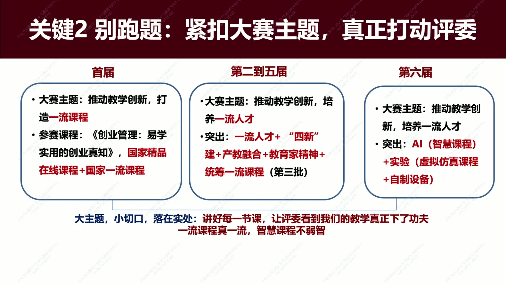
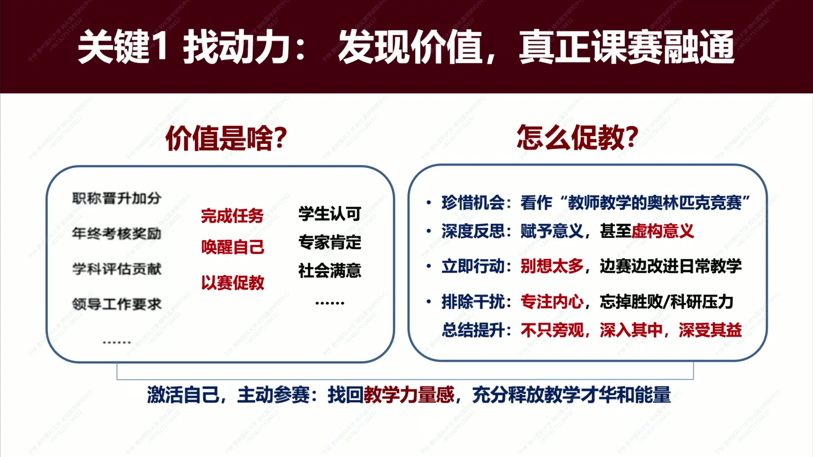
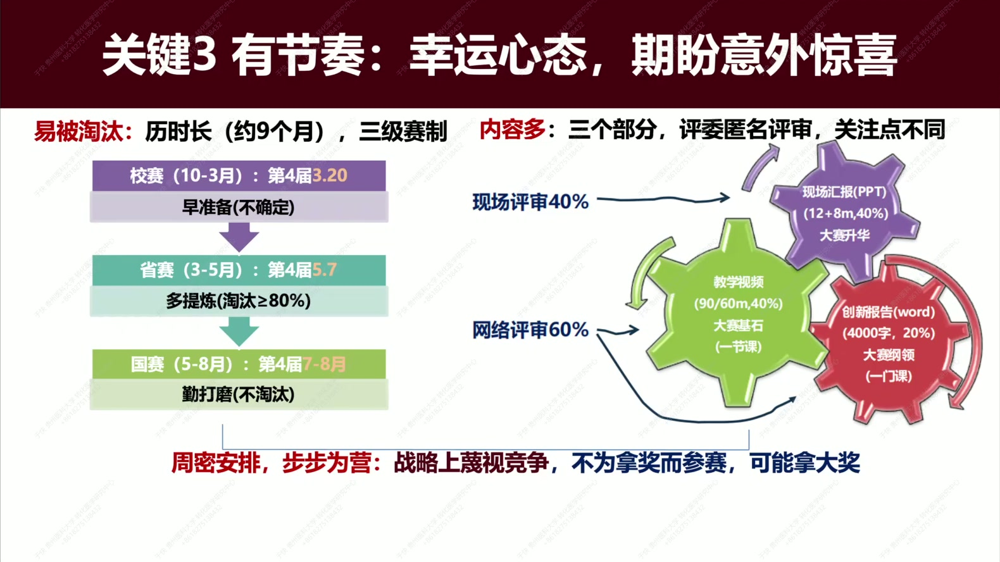
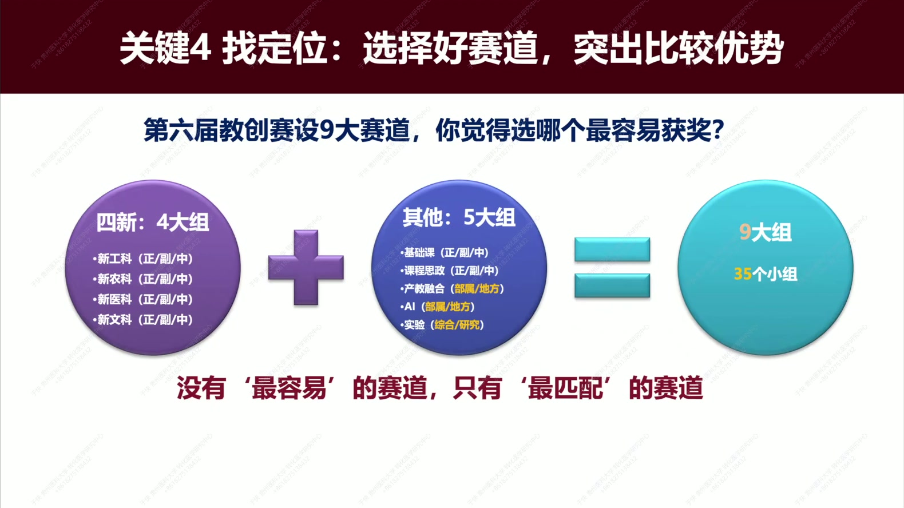
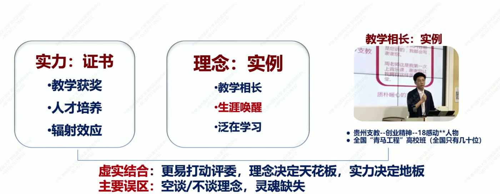
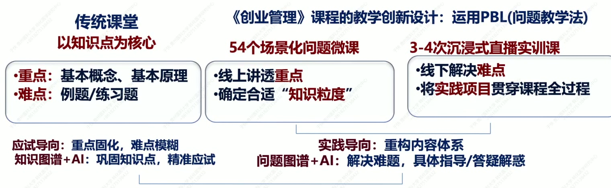
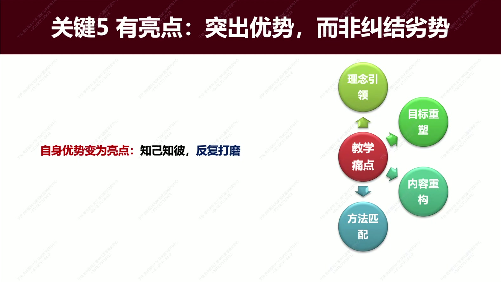
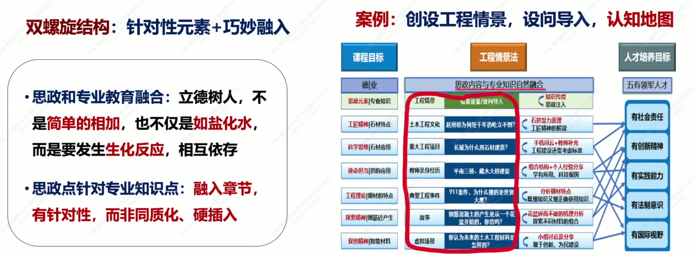
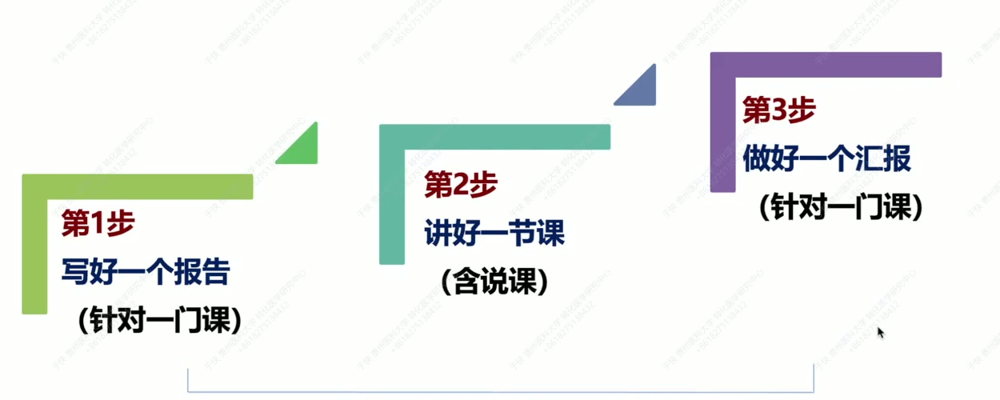
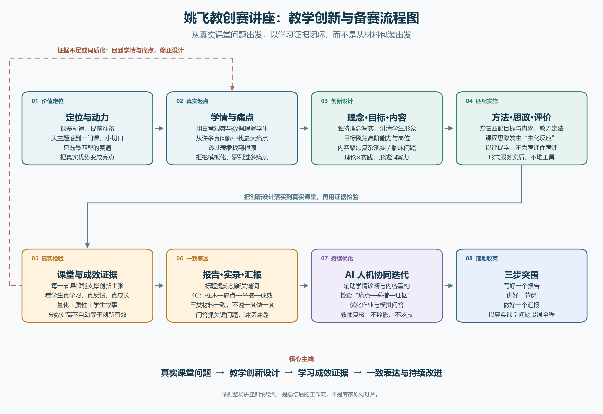

讲座的五大关键
- 找动力：课赛融通，以赛促教，不做旁观者。
- 别跑题：大主题落到一门课、小切口和每一节课。
- 保持节奏：提前准备、持续打磨，不等通知再突击。
- 找定位：选择最匹配的赛道，回归课程真实优势。
- 有亮点：把真实优势变成亮点，避免同质化和形式堆砌。
依据讲座视频整理，围绕课赛融通、真实痛点、教学设计、学习成效和材料表达，保留对应幻灯片与原声片段，便于完整阅读和按需回看。
如果把近三小时压缩成一句话：从真实课堂问题出发，形成独特而可实施的教学设计，再用学生学习和课堂表现证明它，最后让报告、实录与汇报一致表达。
按讲座主线整理十组核心内容，保留专家原句、对应幻灯片和原声片段，并附上可用于修改课程与材料的行动建议。
整场讲座最明确的优先级，不是把模式提炼得多复杂，而是让评委看到：这门课能够讲好每一节课，并真实促进学生的成长。

专家原句｜00:15:03–00:15:17“怎么样找小切口呢？今天我给大家提过一个想法，就最重要，这是今天我想给大家交流的最重要的一句话，就是整个比赛你怎么样能够告诉评委：我可以讲好每一节课。”
专家原句｜00:15:17–00:15:44“你让评委产生个印象：这个老师兢兢业业，每一节课上都非常好。”
动力不来自临时突击，而来自比赛与日常改进形成良性循环。参赛材料应当是真实教学探索的沉淀，而不是另起炉灶的包装工程。

专家原句｜00:05:44–00:06:14“决定了之后，不做旁观者，要深入其中。只有深入其中，才能够深受其益”
专家原句｜00:06:15–00:06:44“这就是我一直讲的课赛真正的融通。如果你融通了，参加这个比赛其实就像平时上课一样，放松一点，然后动力慢慢可能就有了，所以不要压力太大。”
三类材料不是三项彼此独立的任务。课堂是事实基础，报告是提炼，现场汇报是解释和升华；任何“说一套、做一套”都会削弱整条证据链。

专家原句｜00:36:58–00:37:17“你看，我看的时候就看这个，看完你这一节课上得不错，我再看一看报告，这两个是不是关联的？是不是相互矛盾？是不是相互打架？是不是说一套做一套？大家一看就知道。”
专家原句｜00:34:23–00:34:53“最后到现场汇报，我们希望老师们把这三个环节把它把控好了，不要觉得想省事，这个视频也经不起考验，就光在弄报告。”
选赛道不能只看表面竞争强弱。课程的真实内容、日常教学基点、已有实践与学习证据，决定了哪条赛道最能支撑你的优势。

专家原句｜00:44:43–00:44:59“你和自己的日常教学的基点，它匹配不匹配？所以只有最匹配的赛道，没有最容易的赛道。”
专家原句｜00:45:53–00:46:17“赛道越来越多，但是你不能眼花缭乱啊，一定要回归到你课程的真正优势是什么。”
真问题可以很多，但创新主线不能被许多并列问题冲散。关键是理解学生、透过表象追溯根源，找到能牵动一系列问题的最大痛点。
专家原句｜01:42:49–01:43:17“你一定要找到一个最大痛点。那这个最大痛点是什么？一旦找到了这个，它可以引发一系列的问题。这个最大痛点是什么呢？往往是一个根源性问题，也就是透过表象去看本质的问题。”
专家原句｜01:42:00–01:42:29“如果教创赛里边你在痛点这块有所突破，这是这个比赛啊取得突破的核心所在。”
专家并非否定“学生中心”，而是反对只复制共同口号。你的教学哲学要回答本课程如何促进学生成长，并通过学生形象、真实故事和课堂行动变得可见。

专家原句｜02:03:27–02:03:52“有了痛点之后，第一个创新举措首要的就要把你理念写清楚，这个比实力还要重要。”
专家原句｜02:04:44–02:05:11“所以我一直讲，理念决定你比赛的天花板，然后实力决定你的地板。”
专家原句｜02:05:39–02:06:09“评委就知道了你这个培养的一流人才是啥样的，你把它具象化。”
内容为王不等于内容堆叠。真正的重构要聚焦复杂现实或临床问题，让学生在理论与实践的碰撞中学习判断、迁移和解决复杂问题。

专家原句｜02:25:03–02:25:25“这个设计好了，内容设计是决胜教创赛、体现实质性创新的核心。所以这里面很多误区是，很多老师把这个模糊化，靠一些复杂的图表、理论来证明自己的专业。”
专家原句｜02:26:55–02:27:18“理论重要，实践更重要，最重要的既不是理论，也不是实践，而是引导学生在理论和实践碰撞的过程中，帮助他们解决复杂现实问题或者临床问题的这种洞察力。”
方法的数量、名称和技术新旧都不是创新本身。不同目标、内容和学生任务需要不同方法；传统方法用得恰当、有效，同样能够体现教学功力。

专家原句｜01:00:44–01:01:12“所以这里边怎么样真正加分，我个人认为就是匹配，就是你的方法和你的内容是匹配的，和你的目标是匹配的。”
专家原句｜02:37:29–02:37:59“所以真正一个好的课堂，就是不同内容匹配不同的方法，灵活，教无定法。”
思政不是另外插入的一段说教，而是专业问题中的价值判断、责任和选择。自然融合、巧妙融合，才能避免机械对标和过度拔高。

专家原句｜02:32:21–02:32:54“你看这个问题到底是思政问题还是专业问题呢？有的老师认为是专业问题，有的老师认为是思政问题，其实根本分不清，所以这就叫什么？巧妙融合、自然融合。”
专家原句｜02:32:54–02:33:25“你要把这些思政元素和专业问题，和你的专业问题非常好地融合、巧妙地融合，学生感觉不到，甚至专家有时候经过反思之后他才能感觉到。”
全场最后仍回到三类材料，说明它们不是形式清单，而是同一门课的三种验证方式：想清楚、上真实、讲明白。

专家原句｜02:53:45–02:54:13“最后小结一下更好，三步突围，我们这个教创赛哪三步？第一步，写好一个报告，整理一门课；第二步，讲好一节课或者两节课，或者包含说课；第三步，做好一个汇报，也是整理一门课、现场汇报。”
专家在 02:13:05–02:13:34 强调解决复杂现实问题的综合能力、高阶思维，并把课程目标转化为适应未来岗位的能力。
01:02:31–01:03:17 反复追问指标完成后学生是否真学；02:39:20–02:39:50 进一步强调创设环境。评价要支持自主学习和岗位意识，而不是单纯增加指标。
可用于学情诊断、内容重构、报告检查、作业设计和模拟问答。01:28:47–01:29:13 明确说“不是说照搬 AI 啊，一定是人机协同”；02:09:39–02:09:59 又提醒套路化理念会得到套路化大纲。教师需复核事实、适切性和学生真实学习过程。
00:12:39–00:13:11 要求学生进步及其与课程关系的实际证据；01:43:51–01:44:20 对只用平均分提升证明创新提出反问；02:35:38–02:36:04 强调小问题、小行动、真反馈、真成长。建议组合量化、质性和学生故事，并解释课程与成长的关联。
将全场内容组织为“定位与动力→学情与痛点→理念目标内容→方法思政评价→课堂与成效证据→报告实录汇报→AI 人机协同迭代→三步突围”。如果证据不足或仍然同质化，返回学情与痛点，而不是继续美化形式。

该图是依据讲座内容归纳的工作流，不是专家原幻灯片。
以下按讲座展开顺序整理。个别编号边界在口语中有所交叉，因此时段标为“约”；它们用于快速回听，不替代前面的重点分析。
| 序号 | 要点 | 对应时段 | 核心与误区 |
|---|---|---|---|
| 1 | 报告标题 | 约 01:09:30–01:16:27 | 提炼创新举措的关键词，简单明了；避免随意、套路化和只模仿“三环五步”。 |
| 2 | 报告目录 | 约 01:16:27–01:29:42 | 专家称其为“反复强调”的 4C 极简结构：课程概述、学情痛点、创新举措、成效辐射；不机械逐条对标。 |
| 3 | 学情与痛点 | 约 01:41:40–02:03:25 | 痛点要真痛、基于学情、聚焦最大痛点并追溯根源。 |
| 4 | 理念写实 | 约 02:03:27–02:11:42 | 理念是首要创新举措，需独特、具象、能落到学生成长；不能空谈或只写实力。 |
| 5 | 目标重塑 | 约 02:11:42–02:20:28 | 目标聚焦高阶思维、复杂问题解决和岗位能力，从教学目标转化为学习目标。 |
| 6 | 内容设计简约 | 约 02:20:28–02:25:25 | 重难点明确，反对拼盘式融入；以实践导向和实质重构替代复杂图表。 |
| 7 | AI 强化内容重构 | 约 02:25:25–02:31:29 | 聚焦复杂现实／临床问题，理论与实践碰撞；持续优化问题图谱而非一次生成。 |
| 8 | 课程思政 | 约 02:31:30–02:36:31 | 发生“生化反应”，自然、巧妙融入专业问题，避免硬插、机械拆分和拔高。 |
| 9 | 方法匹配 | 约 02:36:04–02:37:59 | 不同内容匹配不同方法，灵活、教无定法；不堆方法，不机械重复流程。 |
| 10 | 考评合理 | 约 02:37:59–02:43:07 | 以评促学、让学生真学习，创设环境；用 AI 辅助高阶作业与精准教学，不为考评而考评。 |
| 11 | 课堂实录 | 约 02:43:07–02:50:20 | 聚焦复杂问题，持续优化每一节课的导入、过程和收尾，以真实课堂支撑报告。 |
| 12 | 现场汇报 | 约 02:50:20–02:51:34 | 深入浅出讲透每一节课，呈现真实教学理解，而不是把方法名词再念一遍。 |
| 13 | 现场问答 | 约 02:51:34–02:53:45 | 提前准备但拥抱不确定，抓关键问题并讲深讲透，避免每个问题都浅答。 |